Pierwsze kroki¶
Ta strona prowadzi od pustego modelu do pierwszego harmonogramu. Każdy krok to jedno okno: gdzie jesteś, co zrobić, jak to wygląda. Szczegóły każdego okna są w Podręczniku.
Cały scenariusz w skrócie: model → stanowiska → procesy i operacje → zlecenia → kryteria → generowanie → wykres Gantta → ocena.
1. Utwórz nowy model¶
Gdzie: menu Plik
- Wybierz Plik → Nowy → Harmonogramowanie produkcji.
- Jeśli masz już model, wybierz Plik → Otwórz (zob. Pliki modelu).
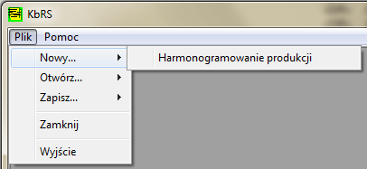
2. Ustal wielkość modelu¶
Gdzie: okno wstępnej konfiguracji (otwiera się samo po kroku 1)
- Podaj liczbę stanowisk, procesów, operacji w procesie i zleceń.
- Wybierz rodzaj przepływu: job shop albo flow shop.
- Zaznacz Wygeneruj dane losowe, jeśli chcesz od razu mieć wypełniony model do ćwiczeń. Bez tej opcji program przyjmie wartości domyślne.
- Kliknij Utwórz.
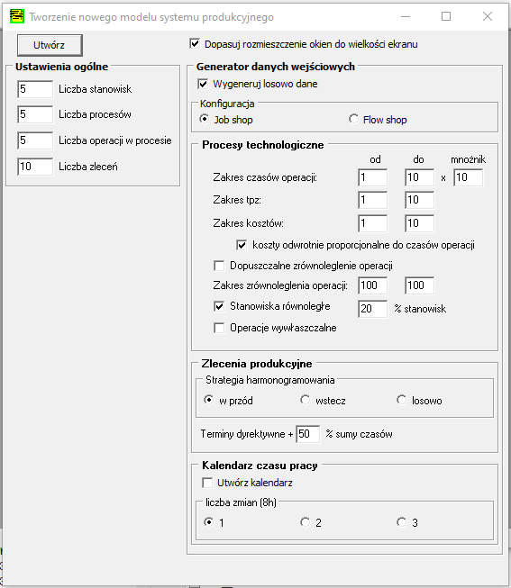
Wszystko da się później zmienić
Liczby i wartości z tego okna to tylko punkt startu — każdą można potem edytować w oknach danych.
3. Poznaj okna i nawigator¶
Gdzie: okno Nawigator (menu Widok → Panel nawigacji albo ikona N)
- Nawigator otwiera okna z danymi i wynikami.
- Prawy przycisk myszy na tabeli otwiera menu z opcjami (dodaj, usuń, przesuń, zapisz do CSV) — działa we wszystkich tabelach programu.
- Po wpisaniu wartości zatwierdź je Ctrl+S — dotyczy wszystkich tabel i pól edycyjnych.
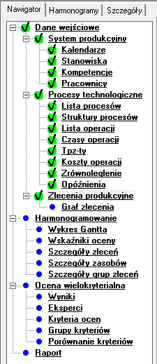
Bez Ctrl+S zmiana w tabeli nie zostanie zapamiętana
4. Sprawdź stanowiska¶
Gdzie: okno System produkcyjny, zakładka Stanowiska
- Dodaj lub usuń stanowiska (prawy przycisk → menu).
- Każdemu stanowisku przypisz kalendarz pracy i pojemność.
- Zatwierdź Ctrl+S.
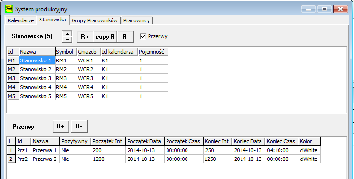
5. Utwórz procesy (technologię)¶
Gdzie: okno Procesy i zlecenia, zakładka Procesy
- Utwórz tyle procesów, ile różnych wyrobów chcesz planować.
- Dodawanie i usuwanie — prawy przycisk myszy.
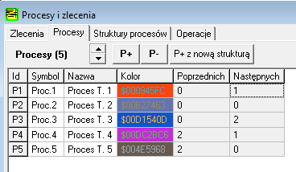
6. Opisz operacje procesu¶
Gdzie: Procesy i zlecenia → Operacje → Lista operacji
- Wybierz proces do edycji.
- Dodaj operacje i ułóż je w kolejności.
- Ustal cechy operacji (podzielność, liczba zasobów itd. — zob. Operacje).
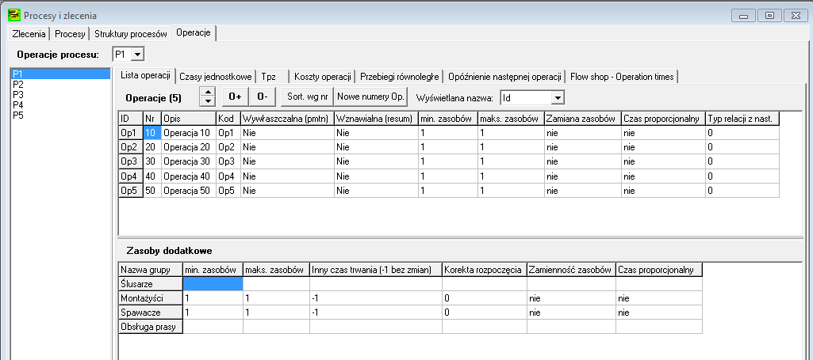
7. Wpisz czasy operacji¶
Gdzie: Procesy i zlecenia → Operacje → Czasy jednostkowe
- Wpisz czas każdej operacji na stanowiskach, które mogą ją wykonać.
- Kilka stanowisk z czasem przy jednej operacji = stanowiska równoległe (program wybierze jedno z nich).
- Opcjonalnie w kolejnych zakładkach: koszty, czasy przygotowawczo-zakończeniowe, zrównoleglenie.
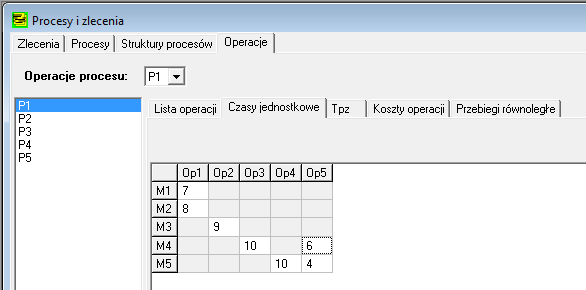
8. Wystaw zlecenia¶
Gdzie: Procesy i zlecenia → Zlecenia
- Ustal liczbę i kolejność zleceń.
- Każdemu zleceniu wybierz proces.
- Pozostałe cechy (liczba sztuk, terminy, strategia) — dwukrotne kliknięcie w komórkę.
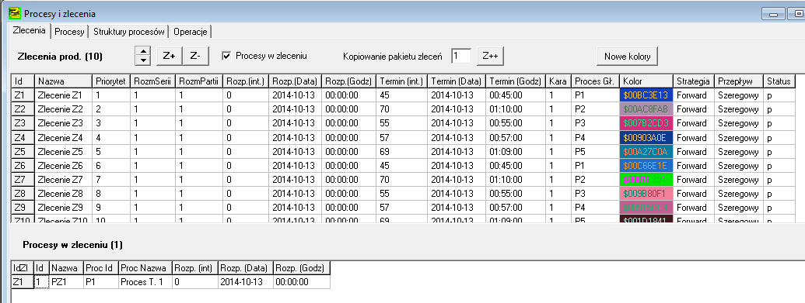
9. Wybierz kryteria oceny¶
Gdzie: okno Ocena wielokryterialna, zakładka Kryteria oceny
- Nadaj wagi kryteriom, które są dla Ciebie ważne.
- Waga 0 = kryterium nie jest brane pod uwagę.
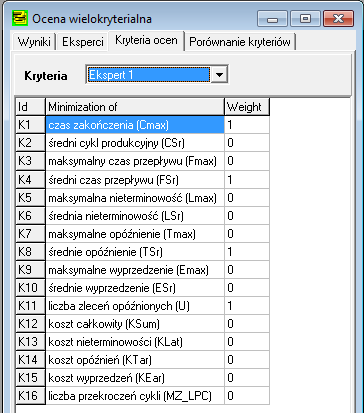
10. Uruchom harmonogramowanie¶
Gdzie: okno Harmonogramowanie
- Wybierz reguły (algorytmy) tworzenia harmonogramów — co najmniej jedną.
- Uruchom generowanie.
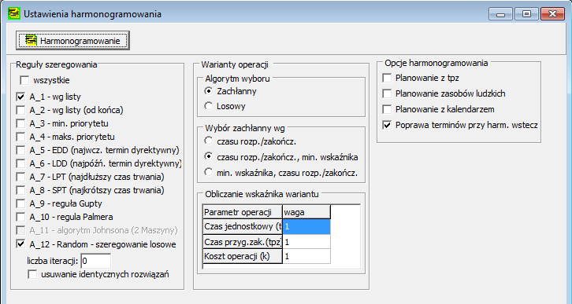
11. Poczekaj na wyniki¶
Gdzie: okno postępu (widoczne tylko w czasie obliczeń)
- Okno pokazuje liczbę harmonogramów, najlepszy i najgorszy wynik oraz czas.
- Stop kończy poszukiwanie — znalezione harmonogramy zostają.
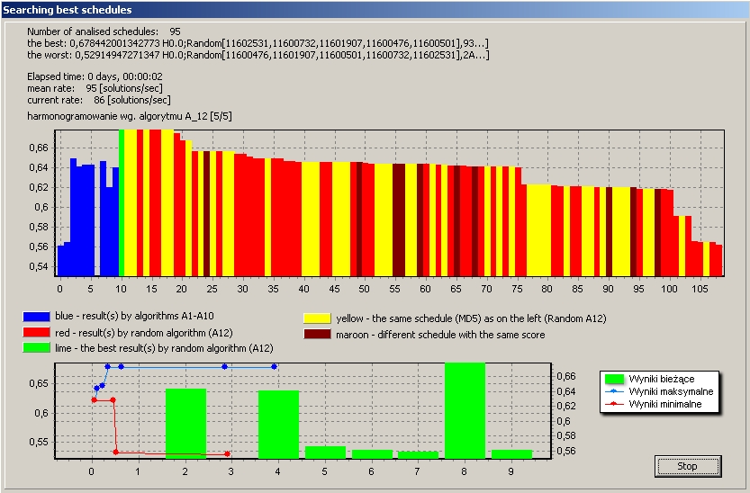
12. Obejrzyj harmonogram na wykresie Gantta¶
Gdzie: okno Harmonogram, zakładka Wykres Gantta
- Wybierz harmonogram z listy.
- Kliknij operację — zobaczysz jej parametry, czasy i ścieżkę całego zlecenia.
- Powiększenie: zaznacz prostokąt od lewej do prawej; powrót: od prawej do lewej.
- Prawy przycisk na wykresie — opcje, zapis, kopiowanie.

13. Porównaj harmonogramy¶
Gdzie: okno Harmonogram → zakładki Szczegóły harmonogramu i Wskaźniki oceny; okno Ocena wielokryterialna → Wyniki
- Szczegóły — parametry harmonogramu widocznego na wykresie.
- Wskaźniki oceny — wszystkie harmonogramy w tabeli; kliknięcie nagłówka sortuje.
- Wyniki oceny wielokryterialnej — ranking z uwzględnieniem wag; wybierz eksperta i sortowanie.
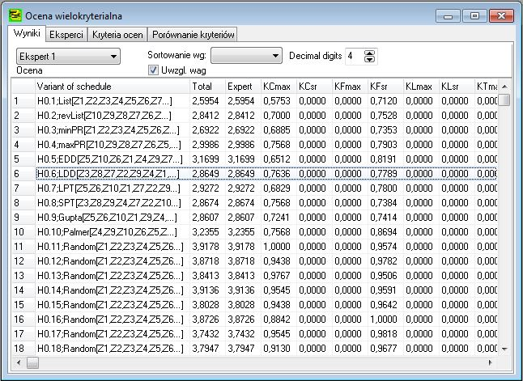
14. Zapisz model¶
Gdzie: menu Plik → Zapisz / Zapisz jako
- Model zapisuje się w pliku
.kbrs(dane i ustawienia w jednym pliku). - Szczegóły: Pliki modelu.
Co dalej? Każdy krok ma swoją stronę w Podręczniku — zacznij od Danych wejściowych albo sprawdź pojęcia w Słowniku.